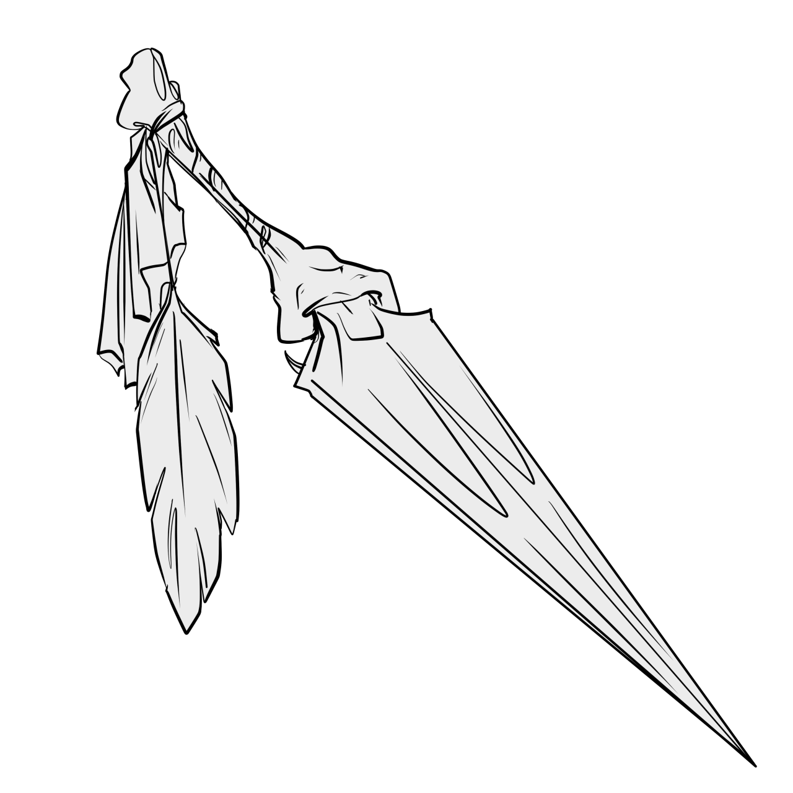

|  | The Little DeathThis +3 dagger is made of a shard of the Raven Queen's throne, carved from it by the Queen's own knives. It is a thin rondel dagger of black iron, with golden light glimmering across the blade's triangular surface. The tang is elegantly sculpted into three raven's talons delicately gripping the blade. The hilt is a short section of polished human bone, carved into the shape of a raven's leg, with script in an ancient language etched in a spiral around its circumference, pulsing with golden light. At its end is a pennant made of a scrap of jet-black velvet, which sublimates into nothingness at the edges, and a golden-tipped raven feather - a piece of the Raven Queen's own divine mantle, willingly given to her Champion. The dagger deals 1d4 + 3 + your Charisma modifier radiant or necrotic damage - you choose when you make the attack. You have advantage on attack rolls made against undead with this weapon, and against those creatures your strikes deal an additional 3d10 radiant damage. Dealing damage to an undead creature with this weapon heals you for half the damage you deal. Sundering attacks made against artifacts of Orcus deal maximum damage. (This feature only works on objects tied to Orcus, not creatures.) If you commit an action that is against the tenets of the Raven Queen or against specific instructions given to you by her, you take 5d10 psychic damage, but no more than twice each day. The tenets of the Raven Queen are as follows, and are written in the etchings on the hilt:
|